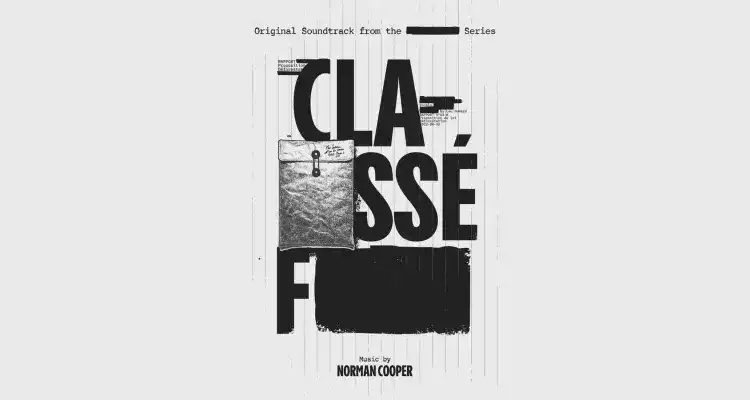

Iris page two
poignant music from WWF
Iris page two, an ost both peaceful and serious, underlining the sadness of a militant audio political thriller political thriller. Created to teach citizens how to fight to improve an "anti-deforestation" law perverted by crooked crooked politicians
Information
| Type | Music |
| Composer | Norman Cooper |
| Chanteur | None |
| musical genre | soundtrack |
| Listening time | 46s |
| Release date | June 9 2022 |
Cute from the show
F-rated
from whichthe music is taken
About its making
"Iris page two" is a music track that is part of the soundtrack for the WWF's "Classé-F" series. This music, like the other pieces in the audio series, was composed, programmed, performed, and mixed by Norman Cooper, with Baptiste Mottais on the guitar.
What is the classée F series
Amidst scandal and corruption, we witness the tale of a journalist stumbling upon a damning account in a personal journal, detailing a law meant to combat deforestation.
Will he dare to publish this information, even if it means sparking scandals and implicating the powerful names of the mentioned Parliamentarians?
More about WWF
The WWF, or World Wide Fund for Nature, is a non-profit international environmental organization founded in 1961. Its primary mission is the conservation of biodiversity, environmental protection, combating climate change, and promoting sustainable development through projects and awareness initiatives worldwide. Recognizable by its emblem, the giant panda, WWF collaborates with various stakeholders to preserve the planet and its natural resources.
Citation
"This year is decisive for the future of forests. A historic European bill is currently being debated to halt deforestation. If it is to live up to the urgency of the situation, we need to mobilize all citizens. The reality of deforestation is a real ecological thriller, which is why we chose to produce the Classé-F series. With this series, we go behind the scenes of power and understand how a supposedly higher interest manifests itself than that of the forests: some have an interest in keeping quiet, others in waiting, others in staying out of it and letting the neighbor take care of it. And all the while, the destruction continues, with no one feeling responsible. In Classé-F, a young woman wants to get involved and take action, just like the millions of young people who have been shaking up the established order for months. The more of us there are, the greater our chances of winning. The series shows that together, we can act! "
Conclusion
"Iris Page Two" not only evokes poignant musical harmony but also serves as a call to action for the preservation of our forests. Featured in the socially conscious "Classé-F" series by WWF, this musical composition captures both the serenity of nature and the gravity of the ecological challenges that surround us. It reminds us that deforestation is a very real ecological thriller where corrupt politicians threaten our ecosystems.
The series and its music are powerful testimonials to the need for taking steps to protect our planet. In this pivotal year for forests, the call to action is clear: let's rally to defend a genuine, uncorrupted "anti-deforestation" law. Through its unwavering commitment to biodiversity conservation and environmental protection, WWF shows us that we can all be part of the solution. Together, we have the power to preserve our beautiful planet for future generations, and "Iris Page Two" inspires us to join this essential fight.